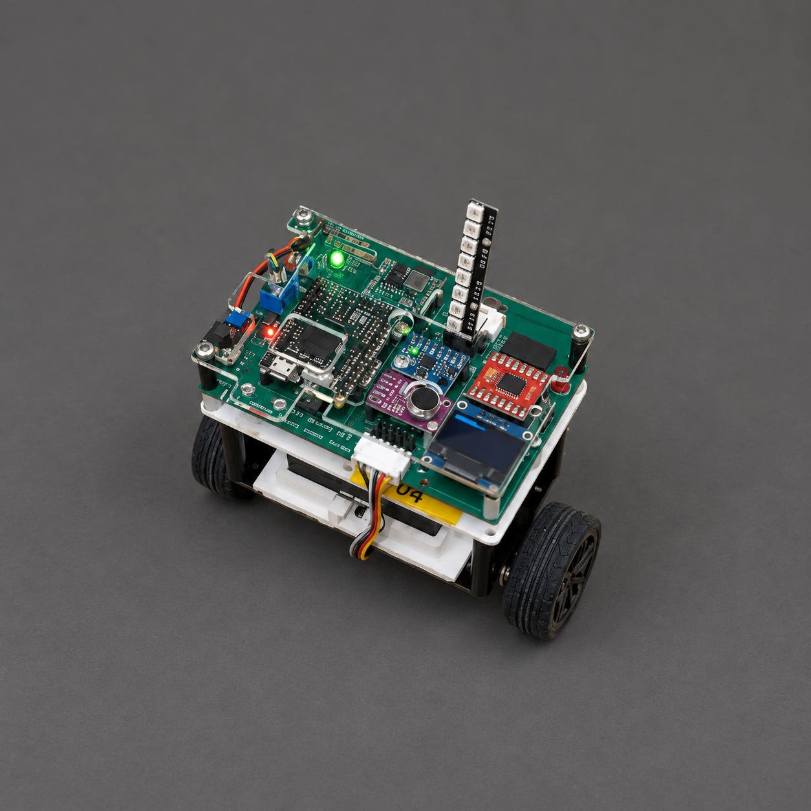

Dancing
Segway.
One beat. One step.
Always finding balance.

Turning live sound into programmable movement, while a continuous feedback loop keeps balance at the centre of the system.
- Discipline
- Physical computing
Signal processing - Platform
- MicroPython
Two-wheel robot - Scope
- Beat detection · IMU fusion
Balance control · Choreography
01 / EXPERIENCE THE SYSTEM LOGIC
Set the moves.
Give it a beat.
Dancing Segway turns audio beats into programmed moves while continuously correcting its balance. In this control demo, edit the sequence, then tap a beat or press Play. Each beat advances one move; the sequence repeats after step eight.
Its next move.
Balance loop active
Illustrative motion, not a physics simulation or live robot control. Playback uses simulated beats at 96 BPM.
F / B · forward / backward L / R · turn
- Pitch offset
- 0°
- Turning
- No bias
- Motor A
- balance
- Motor B
- balance
Within ±60° · balance commands remain enabled.
Beyond ±60°, the source logic stops both motors and resets the PID integral. Return within the limit to try the sequence again.
THE SYSTEM PRINCIPLEOne beat advances the dance. Feedback keeps running between beats.
02 / FRAME THE SYSTEM
Movement follows music.
Balance never pauses.
The design connects three tasks with different rhythms: listen for beats, select a programmed move, and keep correcting tilt. Choreography must work through the balance controller.
Bring beat detection, balance and motion together in one responsive physical system.
Find the moment.
Detect peaks in audio energy and use them to trigger a new move.
Keep correcting.
Estimate pitch from IMU data and continuously adjust motor output.
Change the target.
Add pitch or turning offsets while the balance loop stays active.
03 / DEVELOP THE CONTROL LOGIC
Three layers.
One conversation.
Audio events decide when to move. The dance sequence decides how. Balance feedback keeps updating throughout. Explore each layer of the control logic.
Configured parameters from the project, rather than measured timing or stability results.
Does this pulse count?
Adjust the inputs, then test the pulse.
Illustrative inputs for the detection rule. No microphone is used.
Detect energy peaks.
Leave space between beats.
Audio energy is evaluated over 20 ms against a rolling average. A beat triggers above 2.5× the average energy, with more than 150 ms between accepted beats.
- Why use a relative threshold?
- The decision compares a peak with the recent audio energy.
- Why separate detections?
- The time gate prevents closely spaced detections from advancing multiple moves.
The IMU supplies accelerometer tilt and gyro rate.
A loop that runs
through every move.
A complementary filter combines accelerometer tilt and gyro rate to estimate pitch. The PID controller compares that estimate with its target and adjusts both motors to correct tilt.
- Constrain the command
- Integral and output limits keep the controller’s command bounded.
- Keep updating
- The configured target control interval is 5 ms; balance feedback continues between audio events.
target = base + dance_pitch motor_A = balance + turn motor_B = balance − turnExplore a sequence ↓
Dance through
the controller.
Each detected beat selects a move. Forward and backward moves change the target pitch; turning adds opposite motor biases. Balance correction remains part of both motor commands.
- Pitch is a target
- The ±1.5° offset is a control input, not a measured robot angle.
- Turning is differential
- One motor receives an added bias while the other receives the opposite bias.
04 / INTEGRATE THE PHYSICAL SYSTEM
Every component
has a role.
Inputs, control, actuation and visible feedback come together on the prototype. Select a labelled component to follow its role in the system.
Controller
Runs the MicroPython program, coordinating audio events, the stored dance sequence and balance control.
Hardware layout schematic from the project. The cover presents the prototype on a visualised performance stage.
05 / EVIDENCE & THE NEXT ITERATION
A responsive system.
A clear next test.
The project connects live audio events to a stored sequence and continuous balance feedback. The next step is to measure how reliably that integration performs on the physical robot.
Make motion responsive.
Use sound to advance programmable moves while keeping the balance loop active.
Connect code to behaviour.
The control logic combines beat detection, pitch estimation, motor mixing and visible system feedback.
Measure the response.
Balance stability and beat-response performance still need measurement. Configured intervals and offsets do not establish achieved performance.